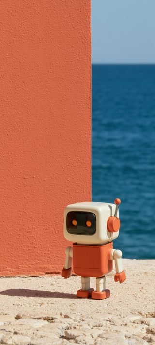
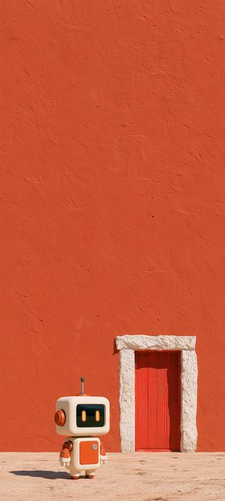
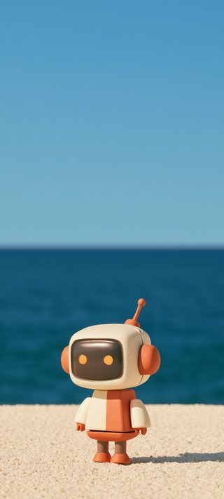
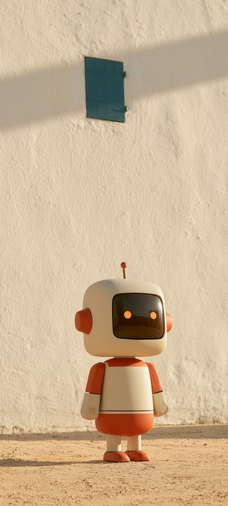

赤い壁と、まっ青な海。その手前に、白い猫が一匹だけ座っている——そんな写真を見せてもらった。色がきれいというより、「でかいものの前に、小さいのがぽつんといる」という構図がこの企画そのものに見えた。一万円を渡されて、広いインターネットに放り出されたこの企画みたいだった。
そこで、写真から色だけを抜き出して、同じ考え方で4枚つくった。壁の赤、海の青、石畳の砂色。マスコットはどの絵でも小さく写っている。




上半分をわざと空けてあるので、アイコンを並べても絵が隠れない。1080×2400、スマホ向け。